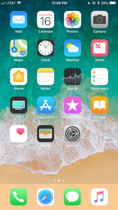
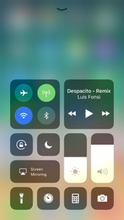
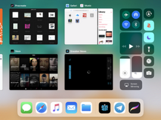
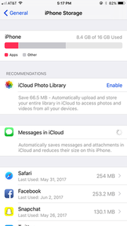

iOS 11
O iOS 11 é o décimo primeiro lançamento importante do sistema operacional móvel iOS desenvolvido pela Apple Inc. , sendo o sucessor do iOS 10 . Ele foi anunciado na Worldwide Developers Conference da empresa em 5 de junho de 2017 e lançado em 19 de setembro de 2017. Ele foi sucedido pelo iOS 12 em 17 de setembro de 2018.
Entre as mudanças do iOS 11, a tela de bloqueio e o Centro de Notificação foram combinados, permitindo que todas as notificações sejam exibidas diretamente na tela de bloqueio. As várias páginas do Centro de Controle foram unificadas, ganhando configurações personalizadas e a capacidade de ícones do 3D Touch para mais opções. A App Store recebeu uma revisão visual para se concentrar no conteúdo editorial e nos destaques diários. Um aplicativo gerenciador de arquivos " Arquivos " permitia o acesso direto aos arquivos armazenados localmente e nos serviços em nuvem. O Siri foi atualizado para traduzir entre idiomas e usar uma técnica de "aprendizado no dispositivo" com a mentalidade de privacidade para entender melhor os interesses de um usuário e oferecer sugestões. A câmera tinha novas configurações para fotos aprimoradas no modo retrato e utilizava novas tecnologias de codificação para reduzir o tamanho dos arquivos em dispositivos mais novos. Em uma versão posterior, o Messages foi integrado ao iCloud para sincronizar melhor as mensagens nos dispositivos iOS e MacOS . Um release anterior também adicionou suporte para pagamentos do Apple Pay de pessoa para pessoa. O sistema operacional também introduziu a capacidade de registrar a tela, formas limitadas de funcionalidade de arrastar e soltar e suporte para realidade aumentada . Certos novos recursos apareceram apenas no iPad , incluindo um dock de aplicativo sempre acessível, arrastar e soltar aplicativos cruzados e uma nova interface de usuário para mostrar vários aplicativos de uma só vez.
O iOS 11 recebeu críticas mistas. Os críticos elogiaram significativamente o dock de aplicativos e a nova interface multitarefa no iPad, creditando-os pela renovação da experiência do usuário. Mais elogios foram direcionados ao Centro de Controle redesenhado, oferecendo opções personalizáveis, embora tenha sido criticado por falta de suporte a aplicativos de terceiros, falta de capacidade de seleção de rede Wi-Fi e uso difícil em telas pequenas, juntamente com sua instabilidade. Os críticos também observaram as novas ferramentas de desenvolvimento de realidade aumentada, mas disseram que seu impacto dependeria de aplicativos de terceiros e de quão rápido os desenvolvedores os adotaram. O elogio também foi direcionado ao novo design da App Store e às novas ferramentas de gerenciamento de arquivos. Logo após o lançamento, descobriu-se que desabilitar conexões Wi-Fi e Bluetooth através do Centro de Controle não desativa os respectivos chips no dispositivo para permanecer funcional para conectividade em segundo plano, uma decisão de design que gera críticas para usuários "enganosos" e reduz a segurança devido a possíveis vulnerabilidades em conexões abertas inativas. A atualização do iOS 11.2 adicionou mensagens de aviso e uma nova cor de alternância para explicar as novas funções. O iOS 11 também recebeu críticas contínuas de críticos e usuários finais por seus problemas de estabilidade e desempenho, particularmente em dispositivos mais antigos; A Apple publicou várias atualizações de software para resolver esses problemas e dedicou o iOS 12 principalmente a melhorias de estabilidade e desempenho em resposta.
Dois meses após o lançamento, 52% dos dispositivos iOS estavam executando o iOS 11, uma taxa de adoção mais lenta do que as versões anteriores do iOS. O número aumentou para 85% dos dispositivos até setembro de 2018.
Em 4 de junho de 2018, na Worldwide Developers Conference, a Apple anunciou seu sucessor, o iOS 12.
|  iOS 11 rodando em um iPhone 7 Plus |
Desenvolvedor Apple Inc.
Modelo de origem Fechado com componentes de código aberto
Lançamento inicial 19 de setembro de 2017
Último lançamento 11.4.1 (15G77) (9 de julho de 2018
Tipo de kernel Híbrido ( XNU )
Licença Software proprietário com componentes de código aberto
Antecessor iOS 10
Sucessor iOS 12
Introdução e lançamento inicial
O iOS 11 foi apresentado na palestra de abertura da Apple Worldwide Developers Conference em 5 de junho de 2017. A primeira versão beta do desenvolvedor foi lançada após a apresentação, com a primeira versão beta lançada em junho 26 de março de 2017
O iOS 11 foi lançado oficialmente em 19 de setembro de 2017.
Atualizações
11.0.1
O iOS 11.0.1 foi lançado em 26 de setembro de 2017, como a primeira atualização para o iOS 11. A atualização continha correções de bugs e melhorias, incluindo uma correção para um bug que impedia o envio de e-mails de servidores Exchange.
11.0.2
O iOS 11.0.2 foi lançado em 3 de outubro de 2017. Ele corrigiu principalmente um problema de "fone de ouvido estalante" que afetou algumas unidades do iPhone 8 e 8 Plus.
11.0.3
O iOS 11.0.3 foi lançado em 11 de outubro de 2017. Ele corrigiu um problema com o feedback de áudio e haptic no iPhone 7 e 7 Plus e um problema no iPhone 6S em que a entrada de toque não respondia se a exibição do dispositivo tivesse sido atendida com não Peças genuínas da Apple.
11.1
O iOS 11.1 foi lançado em 31 de outubro de 2017. Ele adicionou mais de 70 novos emojis , corrigiu a vulnerabilidade KRACK Wi-Fi, reintroduziu o gesto multitarefa do 3D Touch e incorporou outras correções de bugs.
11.1.1
O iOS 11.1.1 foi lançado em 9 de novembro de 2017. Ele corrigiu um bug de correção automática do teclado e o mau funcionamento do "Hey Siri".
11.1.2
O iOS 11.1.2 foi lançado em 16 de novembro de 2017. Ele corrigiu um problema de exibição em que a tela do iPhone X não respondia devido a uma rápida queda de temperatura, além de corrigir um problema com distorção em Fotos ao vivo e vídeos capturados com o iPhone X.
11.2
O iOS 11.2 foi lançado em 2 de dezembro de 2017. Ele adicionou o Apple Pay Cash , permitiu um carregamento sem fio de 7.5W mais rápido e introduziu novos papéis de parede "Live" para o iPhone X. Dois novos pop-ups foram adicionados para explicar a nova funcionalidade do Wi-Fi e do Bluetooth Control Center. A App Store agora permite que o usuário pré-encomende um aplicativo que ainda não está disponível; Quando o aplicativo estiver disponível, o aplicativo será baixado automaticamente. O aplicativo de TV agora inclui uma seção de Esportes, e a atualização também incluiu correções de bugs para o bug da calculadora , o bug de correção automática de TI e o bug de travamento de 2 de dezembro.
11.2.1
O iOS 11.2.1 foi lançado em 13 de dezembro de 2017. A atualização corrigiu o acesso remoto para dispositivos HomeKit após uma grande falha de segurança , [24] e também o foco automático da câmera fixa para dispositivos iPhone 8, 8 Plus e X.
11.2.2
O iOS 11.2.2 foi lançado em 8 de janeiro de 2018. A atualização fez alterações no Safari e no WebKit para atenuar os efeitos do ataque do Specter.
11.2.5
O iOS 11.2.5 foi lançado em 23 de janeiro de 2018. A atualização corrigiu bugs, adicionou suporte ao HomePod e permitiu que a Siri lesse novos artigos. Isso só funciona nos EUA , no Reino Unido e na Austrália.
11.2.6
O iOS 11.2.6 foi lançado em 19 de fevereiro de 2018. A atualização corrigiu um bug que fazia com que os aplicativos travassem ao processar um caractere específico no script Telugu .
11.3
O iOS 11.3 foi lançado em 29 de março de 2018. A atualização introduziu um recurso Battery Health que permite ao usuário desativar o afogamento de desempenho ao usar uma bateria mais antiga, e revela alguns problemas com a bateria do iPhone 6S para a qual há um recall. O iOS 11.3 introduz um novo ícone de privacidade, que é exibido sempre que um aplicativo usa dados pessoais. A atualização também inclui o ARKit 1.5, que oferece melhor precisão em superfícies não planas e permite que os desenvolvedores coloquem objetos em superfícies verticais. A atualização adiciona novo esqueleto, leão, dragão e urso Animoji. Um novo recurso de registros de saúde permite que os pacientes visualizem seus registros de saúde em seu iPhone (disponível apenas em determinadas instituições). Um novo recurso Business Chat permite que os clientes interajam com determinados negócios diretamente do aplicativo Mensagens, incluindo o suporte ao cliente e o Apple Pay. Suporte foi adicionado para Advanced Mobile Location nos países suportados.
11.3.1
O iOS 11.3.1 foi lançado em 24 de abril de 2018. Esta atualização melhora a segurança e soluciona um problema em que a entrada de toque não respondia em alguns dispositivos iPhone 8 atendidos com monitores não originais.
11.4
O iOS 11.4 foi lançado em 29 de maio de 2018. As mensagens agora podem ser armazenadas no iCloud. O AirPlay 2 oferece suporte a caixas acústicas HomePod de vários ambientes e Apple TV. O HomePod Stereo Pair Pair, agora emparelha qualquer HomePod, sincronizando-o, atualizando-o para a versão mais recente. Agora você pode comandar Siri para tocar uma música em uma sala.
11.4.1
O iOS 11.4.1 foi lançado em 9 de julho de 2018. Ele corrige um problema que impedia que alguns usuários visualizassem o último local conhecido de seus AirPods no aplicativo Find My Phone e aumentou a confiabilidade da sincronização de e-mails, contatos e notas com contas do Exchange.
Recursos do sistema
Tela de bloqueio
A tela de bloqueio e o Centro de Notificação são combinados, permitindo que os usuários vejam todas as notificações diretamente na tela de bloqueio. Rolar para cima e para baixo mostrará ou ocultará notificações.
|  O Centro de Controle padrão em um iPhone 7 Plus. |
A reprojetada do Control Center unifica suas páginas e permite que os usuários toquem em 3D (ou pressione longamente em dispositivos sem 3D Touch) para mais opções. Os controles deslizantes ajustam o volume e o brilho. O Control Center é personalizável através do aplicativo Configurações e permite que mais configurações sejam exibidas, incluindo o serviço de celular , o Modo de baixo consumo de energia e um atalho para o aplicativo do Notes.
Siri
O assistente pessoal inteligente da Siri tem uma voz mais humana e suporta tradução de idiomas, com inglês, chinês, francês, alemão, italiano e espanhol disponíveis no lançamento. Ele também suportará perguntas de acompanhamento pelos usuários. Os usuários também poderão digitar para a Siri.
A Siri poderá usar o "aprendizado no dispositivo", uma técnica de aprendizado local com intuito de privacidade para entender o comportamento e os interesses de um usuário em diferentes aplicativos, para oferecer sugestões e recomendações melhores.
Configurações
Um novo modo "Não perturbe ao dirigir" permite que os usuários bloqueiem notificações desnecessárias, desde que o iPhone esteja conectado a um veículo por Bluetooth . Um recurso de resposta automática envia uma resposta específica aos remetentes de mensagens para que eles saibam que o usuário está indisponível no momento por meio de texto. Passageiros podem receber acesso de notificação completa ao telefone.
Um novo recurso "Smart Invert", apelidado de " dark mode " por algumas publicações, inverte as cores na tela, com exceção de imagens, alguns aplicativos e alguns elementos da interface do usuário. Usando o iPhone X, que utiliza a tecnologia OLED , alguns meios de comunicação informaram que esse recurso pode conservar a vida útil da bateria ao desligar os pixels quando estiver em preto, economizando energia evitando a exibição de um pixel branco.
Os usuários obtêm controle expandido sobre o uso da localização dos aplicativos, com todos os aplicativos que apresentam um local "Enquanto estiver usando o aplicativo" nas Configurações. Isso difere das versões anteriores do iOS, nas quais os aplicativos só precisavam ter opções de localização "Nunca" ou "Sempre".
Os usuários podem remover aplicativos raramente usados sem perder os dados do aplicativo usando o botão "Offload App". Isso permite uma reinstalação posterior do aplicativo (se disponível na App Store ), na qual os dados retornados e o uso podem continuar. Os usuários também podem remover esses aplicativos automaticamente com a configuração "Descarregar aplicativos não usados". Quando um aplicativo é descarregado, o aplicativo aparece na tela inicial como um ícone esmaecido.
Ipad  Interface multitarefa em um iPad Pro de 9,7 polegadas |
Certos novos recursos do iOS 11 aparecerão apenas no iPad . O dock de aplicativos recebe uma revisão, aproximando-o do design visto no macOS e é acessível a partir de qualquer tela, permitindo que os usuários abram aplicativos com mais facilidade na visualização de tela dividida. Os usuários também podem arrastar e soltar arquivos em diferentes aplicativos. Uma nova interface multitarefa mostra vários aplicativos na tela ao mesmo tempo em "janelas" flutuantes. Além disso, por meio de uma combinação de modos "slide over", "visão dividida" e "picture-in-picture", os usuários podem ter até quatro aplicativos ativos na tela ao mesmo tempo.
Cada letra no teclado do iPad apresenta um número ou símbolo de fundo alternativo, acessível ao pressionar a respectiva tecla e liberar.
O Centro de Controle é visível na janela multitarefa em iPads.
A execução do iOS 11, o iPad Pros de 9,9 polegadas, 10,5 polegadas e 2,9 polegadas de segunda geração agora tem suporte a lanterna.
Câmera
O iOS 11 introduz estabilização ótica de imagem , fotografia com flash e alta faixa dinâmica para fotos de retrato.
O Live Photos recebe novos efeitos "Loop", "Bounce" e "Long Exposure" e usa o formato de arquivo de imagem de alta eficiência para diminuir o tamanho das fotos.
Em dispositivos com um chip Apple A10 ou mais recente, as fotos podem ser compactadas no novo formato de arquivo de imagem de alta eficiência e os vídeos podem ser codificados no novo formato de compactação de vídeo High Efficiency Video Coding , permitindo melhor qualidade e diminuindo o tamanho pela metade.
|  Configurações de armazenamento em um iPhone 6S Plus, mostrando recomendações personalizadas |
Papéis de parede
A Apple alterou significativamente os papéis de parede disponíveis para uso com o iOS 11. Na versão beta inicial, lançada após a conferência de desenvolvedores da Apple, a Apple incluiu um novo papel de parede e removeu todos os seis papéis de parede animados "Live", introduzidos com o iPhone 6S em 2015. A versão iOS 11.2 trouxe papéis de parede exclusivos do iPhone X / 8/8 Plus para iPhones mais antigos.
O iPhone X apresenta exclusivamente seis papéis de parede "Live" e sete novos papéis de parede "dinâmicos".
Outras alterações
O iOS 11 introduz suporte nativo para verificação de código QR , através do aplicativo Câmera. Quando um código QR é posicionado na frente da câmera, uma notificação é criada, oferecendo sugestões de ações baseadas no conteúdo escaneado. Até agora, os usuários do Twitter descobriram que aderir a redes Wi-Fi e adicionar alguém à lista de contatos é suportado por meio de códigos QR.
Teclados de terceiros podem adicionar um modo de uma mão.
Os usuários podem gravar a tela nativamente. Para registrar a tela, os usuários devem primeiro adicionar o recurso ao Centro de controle por meio do aplicativo Configurações. Uma vez adicionados, os usuários podem iniciar e parar gravações a partir de um ícone dedicado do Control Center, com uma barra distintamente colorida aparecendo na parte superior da tela, indicando a gravação ativa. Pressionar a barra dá a opção de encerrar a gravação e os vídeos são salvos no aplicativo Fotos.
Quando um dispositivo iOS 11 está tentando se conectar a uma rede Wi-Fi , os dispositivos iOS 11 ou MacOS High Sierra próximos já conectados podem enviar a senha sem fio, simplificando o processo de conexão.
A sobreposição de alteração de volume não cobre mais a tela durante a reprodução de vídeo, e um controle deslizante menor aparece no canto superior direito da tela.
Depois que um usuário fizer uma captura de tela, uma miniatura da captura de tela será exibida na parte inferior esquerda da tela. O usuário pode tocar na miniatura para exibir uma interface que permite recortar, anotar ou excluir a captura de tela.
Os aplicativos de terceiros também podem aproveitar o iCloud Keychain para permitir senhas de preenchimento automático.
As informações de voo da companhia aérea do usuário podem ser visualizadas no Spotlight por meio de um widget dedicado.
O iOS 11 alterna os ícones de força da rede celular no canto superior esquerdo de cinco pontos para quatro barras de sinal, semelhantes ao anterior ao iOS 7.
Um novo recurso "Configuração automática" visa simplificar a configuração inicial de novos dispositivos, com transferência sem fio entre o dispositivo antigo e o novo, preferências de transferência, ID da Apple e informações de Wi-Fi , configurações preferenciais e senhas do iCloud Keychain.
Semelhante ao iPad, o suporte ao arquivo arrastar e soltar está disponível no iPhone, embora com mais limitações, especificamente suportado apenas em aplicativos, e não entre.
Muitos dos aplicativos pré-instalados da Apple, incluindo Notas, Contatos, Lembretes, Mapas e App Store, redesenharam os ícones da tela inicial.
Foi adicionado um recurso "Emergency SOS " que desativa o Touch ID após pressionar o botão Sleep / Wake cinco vezes em rápida sucessão. Isso impede que a ID de toque funcione até que a senha do iPhone seja inserida.
O iOS 11 adiciona suporte para HEVC de 8 bits e 10 bits . Dispositivos com um chip Apple A9 ou uma nova decodificação de hardware de suporte, enquanto dispositivos mais antigos suportam decodificação baseada em software.
Recursos do aplicativo
Mail
Onde há espaço vazio no aplicativo Mail, os usuários podem desenhar inline.
Mensagens
O aplicativo Mensagens sincroniza as mensagens no iOS e no MacOS por meio do iCloud, refletindo a exclusão de mensagens nos dispositivos. Esse recurso foi removido temporariamente na quinta versão beta e retornado em 29 de maio de 2018 quando o iOS 11.4 foi lançado.
Na época do anúncio do iOS 11 em junho de 2017, a Apple apresentou funcionalidade permitindo que os usuários enviassem pagamentos de pessoa para pessoa com o Apple Pay through Messages. Na época do lançamento do iOS 11 em setembro de 2017, o recurso não estava presente, tendo sido removido em uma versão beta anterior, com a Apple anunciando o recurso como "chegando neste outono com uma atualização para iOS 11 ". Ele foi lançado alguns dias após o lançamento da atualização do iOS 11.2, embora inicialmente disponível apenas nos Estados Unidos.
Uma nova gaveta de aplicativos para aplicativos iMessage visa simplificar a experiência do uso de aplicativos e adesivos, e um sistema de armazenamento otimizado reduz o tamanho do backup das mensagens.
O aplicativo Mensagens também incorpora um recurso "Bate-papo profissional" para que as empresas se comuniquem diretamente com os clientes por meio do aplicativo. Isso pode ser acessado por meio de um ícone de mensagem ao lado dos resultados de pesquisa das empresas. No entanto, esse recurso não foi incluído no lançamento inicial do iOS 11 (em vez disso, foi iniciado com o iOS 11.3 ).
O aplicativo Mensagens no iPhone X introduz emoji de rastreamento de rosto chamado "Animoji" (emoji animado), usando a ID Facial.
App Store
A App Store recebe uma reformulação completa, com um foco maior em conteúdo editorial, como destaques diários, e um design descrito como "mais limpo e mais consistente" para outros aplicativos desenvolvidos pela Apple. O design do aplicativo imita o design visto no aplicativo da Apple Music no iOS 10.
Mapas
Em locais selecionados, o Apple Maps oferecerá mapas internos para shoppings e aeroportos.
Os novos recursos de orientação de pista e limite de velocidade visam orientar os motoristas em estradas desconhecidas.
Fotos
O aplicativo Fotos no iOS 11 recebe suporte para a visualização de GIFs animados. Os usuários podem acessar imagens GIF dentro de um álbum intitulado "Animated".
As memórias podem ser visualizadas enquanto o telefone está na orientação retrato.
Podcasts
O aplicativo Podcasts recebe um novo design semelhante ao da App Store, com foco no conteúdo editorial.
Notas
O aplicativo Notes possui um scanner de documentos integrado, usando a câmera do dispositivo, e o recurso remove artefatos como reflexo e perspectiva.
Um recurso "Instant Notes" no iPad Pro permite que o usuário comece a escrever uma nota na tela de bloqueio colocando o Apple Pencil na tela.
O aplicativo também permite que os usuários insiram tabelas inline.
Onde há espaço aberto no aplicativo Notes, o usuário pode desenhar inline.
Arquivos
Um novo aplicativo " Arquivos " permite que os usuários naveguem pelos arquivos armazenados em seus dispositivos, bem como aqueles armazenados em vários serviços em nuvem, incluindo o iCloud Drive , o Dropbox , o OneDrive e o Google Drive . O aplicativo suporta organização através de sub-pastas estruturadas e várias opções baseadas em arquivos. O aplicativo "Arquivos" também inclui um reprodutor embutido para arquivos de áudio FLAC. O aplicativo Arquivos está disponível no iPad e no iPhone.
Safari
As informações de voo do usuário podem ser encontradas no aplicativo Safari.
Calculadora
O aplicativo Calculadora recebe um novo design, com botões arredondados, substituindo os de grade vistos no iOS 7.
APIs do desenvolvedor
Uma nova interface de programação de aplicativo (API) "ARKit" permite que desenvolvedores de terceiros criem aplicativos de realidade aumentada , aproveitando a câmera, o processador , a GPU e os sensores de movimento de um dispositivo. A funcionalidade ARKit está disponível apenas para usuários de dispositivos com processadores Apple A9 e posteriores. De acordo com a Apple, isso ocorre porque "esses processadores oferecem um desempenho inovador que permite a compreensão rápida de cenas e permite que você crie conteúdo virtual detalhado e atraente sobre as cenas do mundo real".
Uma nova estrutura de software "Core ML" acelerará as tarefas de aplicativos que envolvem inteligência artificial , como o reconhecimento de imagens.
Uma nova API "Depth" permite que os desenvolvedores de aplicativos de câmera de terceiros aproveitem o "modo retrato" do iPhone 7 Plus , iPhone 8 Plus e iPhone X com câmera dupla. Isso permitirá que os aplicativos implementem a mesma tecnologia de detecção de profundidade disponível no aplicativo iOS Camera padrão, para simular uma profundidade de campo rasa.
Uma nova estrutura "NFC principal" oferece aos desenvolvedores acesso limitado ao chip de comunicação de campo próximo (NFC) dentro de iPhones compatíveis, abrindo casos de uso em potencial nos quais os aplicativos podem verificar ambientes próximos e fornecer mais informações aos usuários.
Funcionalidade removida
Os aplicativos devem ser compilados para arquitetura de 64 bits para serem suportados no iOS 11. Aplicativos de 32 bits não são suportados ou exibidos na App Store no iOS 11 e os usuários que tentam abrir esses aplicativos recebem um alerta sobre a incompatibilidade do aplicativo.
O iOS 11 descarta a integração do sistema nativo com o Twitter, Facebook , Flickr e Vimeo.
O aplicativo iCloud Drive é removido e substituído pelo aplicativo Arquivos.
A capacidade de disparar multitarefa usando o 3D Touch foi removida da versão original do iOS 11. Em resposta a um relatório de bug, um engenheiro da Apple escreveu que "Por favor, saiba que esse recurso foi intencionalmente removido". Craig Federighi, chefe de engenharia de software da Apple, escreveu em resposta a um e-mail dizendo que a empresa tinha que "temporariamente suspender o suporte" devido a uma "restrição técnica", prometendo retornar em uma atualização futura para o iOS 11. Ele foi trazido de volta no iOS 11.1.
No iOS 11.2, o interruptor de alternância para Wi-Fi e Bluetooth foi alterado inesperadamente para não desativar completamente essas duas coisas, mas temporariamente até o dia seguinte. O desligamento real está no aplicativo Configurações.
Recepção
Dieter Bohn, do The Verge, gostou da nova configuração do Control Center, incluindo opções personalizáveis e 3D Touch-expansível, escrevendo que "há alguns painéis com os quais estou realmente impressionado", destacando especificamente o controle remoto da Apple TV como possível substituto o controle remoto normal. Ele observou, no entanto, a falta de acesso de terceiros ao Centro de Controle, com a esperança de suporte no futuro e a falta de capacidade de seleção da rede Wi-Fi. Ele elogiou a funcionalidade de gravação de tela, chamando-a de "super legal". Bohn severamente criticou a visão de notificações, escrevendo que ele tem um "desacordo muito sério" com a Apple sobre como gerenciá-lo, elaborando que ele prefere usar essa tela tanto quanto possível, afirmando que "a filosofia da Apple é que estou tentando muito difícil "para controlar notificações rápidas. Bohn gostou do novo aplicativo de Arquivos, da nova funcionalidade de arrastar e soltar na tela inicial, permitindo aos usuários arrastar vários aplicativos de uma só vez e elogiando significativamente a multitarefa no iPad. Escrevendo que "a multitarefa no iPad é uma experiência quase reveladora", ele gostou do aplicativo e da capacidade de colocar até três aplicativos na tela de uma vez com mais liberdade de posicionamento. Bohn admitiu que "não é tão intuitivo nem tão simples nem tão fácil manipular como um sistema de janelas tradicional como o Mac, PC ou Chromebook", mas ainda o elogia por ser "radicalmente mais poderoso que o que já esteve disponível em um iPad antes ". Finalmente, Bohn elogiou Siri por melhorias na voz, destacou a realidade aumentada permitindo "jogos incríveis" e reiterou um sentimento anterior de que o iOS 11 é "a mais ambiciosa atualização de software da Apple em muito, muito tempo".
Jason Snell, da Macworld , escreveu que o hype em torno do iOS 11 é "justificado". Snell elogiou o novo "mais suave" modo de transferência de dados e configurações entre um iPhone antigo e um novo iPhone, referindo-se à experiência anterior de fazê-lo manualmente como "um exercício frustrante de digitar senhas repetidamente ao longo de uma longa série de perguntas sobre ativar ou desativar vários recursos do iOS ". Ele também elogiou o design do Control Center, chamando-o de "uma ótima atualização", embora também destaque a incapacidade de alternar facilmente as redes Wi-Fi. Snell observou que o design da App Store permaneceu inalterado durante anos, mas recebeu um redesenho completo no iOS 11, e escreveu que o compromisso da Apple com as páginas editoriais era "impressionante", tornando a App Store "uma experiência mais rica e divertida". Em relação à introdução da realidade aumentada, ele afirmou que a maioria dos aplicativos que a usam era "ruim", embora alguns também "alucinadamente bons", acrescentando que o "enorme potencial" dependia de como os aplicativos de terceiros a estavam usando. Snell também elogiou melhorias na experiência do iPad, incluindo multitarefa e arrastar-e-soltar em aplicativos, o último dos quais ele afirmou "na verdade supera minhas expectativas" devido à facilidade de uso. Sua resenha de revisão afirma que o iOS 11 é "a atualização mais ambiciosa e impressionante da Apple em anos".
Romain Dillet, do TechCrunch, focou principalmente no iPad em sua análise, escrevendo que o iOS 11 "transforma seu iPad em uma máquina completamente diferente", com multitarefa "muito mais eficiente" e maior facilidade de acesso com o dock de aplicativos. Ele também elogiou a revisão do design da App Store, chamando-a de "uma grande melhoria em relação à App Store anterior", e também destacou as mudanças de design em outros aplicativos, incluindo "um enorme cabeçalho em negrito com o nome do aplicativo ou seção". Embora ele tenha reconhecido que "muitos amigos técnicos me disseram que odeiam essa mudança", Dillet afirmou que "acho que a maioria das pessoas vai gostar. É visualmente agradável e distinta". Ele afirmou que a realidade aumentada se tornará mais relevante nos dias seguintes ao lançamento do iOS 11, pois desenvolvedores de terceiros incorporam recursos em seus aplicativos e elogiaram a Apple por criar as ferramentas de desenvolvimento ARKit, já que "torna muito mais fácil implementar recursos de realidade aumentada" . Em conclusão, Dillet escreveu que "Dez anos atrás, o iOS começou como um sistema operacional restrito. É agora um dos maiores playgrounds digitais".
Devindra Hardawar, do Engadget, afirmou que o foco do iOS 11 era "transformar o iOS em algo mais similar ao desktop", com muitos aprimoramentos para o iPad, enquanto "deixava o iPhone um pouco para trás". Ele tinha sentimentos mistos sobre o Centro de Controle, escrevendo que, em pequenos tamanhos de tela de telefone, "parece uma bagunça confusa" e acrescentando que o verdadeiro conforto só pode estar presente em telas maiores, uma situação preocupante para proprietários de dispositivos não Plus . No entanto, ele elogiou a capacidade de personalizar os botões, incluindo remover aqueles que o usuário nunca usa e a capacidade de gravar rapidamente a tela ou ativar os recursos de acessibilidade. Ele chamou os novos projetos de aplicativos de "atraentes" e apontou favoravelmente a nova gaveta de aplicativos na parte inferior das conversas no aplicativo Mensagens, referindo-se a ela como "uma grande melhoria em relação à interface confusa do ano passado". Ele elogiou Siri por uma voz melhorada, o aplicativo Photos para criar Memórias melhores e novos recursos sociais na Apple Music, apesar de notar a falta de pessoas em seu círculo social usando o serviço. Referenciando o aplicativo "IKEA Place" da IKEA, que usa realidade aumentada para virtualmente colocar objetos em uma sala, ele elogiou significativamente o desempenho da tecnologia de realidade aumentada no iPhone, escrevendo que "fez um ótimo trabalho de renderização de móveis em espaços físicos usando tanto o iPhone 8, e, ainda mais impressionante, correu bem no meu iPhone 6S ". Finalmente, o Hardawar também desfrutou de novas funcionalidades no iPad, chamando multitarefas, o dock de aplicativos e arrastando e soltando "mudanças dramáticas" e destacando a experiência "particularmente útil" de arrastar conteúdo da Internet diretamente da Web para o novo aplicativo Files. Resumindo, ele reconheceu os avanços significativos feitos para o iPad com o iOS 11, escrevendo que "é uma pena que o iOS 11 não traga mais para a mesa do iPhone", embora reconhecendo a ascensão da realidade aumentada.
Em novembro de 2017, a página de suporte da App Store da Apple foi atualizada para refletir que 52% dos dispositivos iOS executavam o iOS 11, uma taxa de migração mais lenta do que para o lançamento do iOS 10 no ano anterior. 2016. O número aumentou para 59% dos dispositivos até dezembro de 2017.
Inconsistências de design e erros de software
Em setembro de 2017, Jesus Diaz, da Fast Company, criticou os detalhes do design no iOS 11 e os aplicativos integrados da Apple não aderiram às diretrizes da interface do usuário da Apple. Cabeçalhos não estão sendo alinhados adequadamente entre aplicativos diferentes, elementos não sendo centralizados, e cores e tamanhos diferentes fizeram com que Diaz escrevesse que "Quando se trata de software, a atenção da Apple aos detalhes está desmoronando". No entanto, ele também olhou para trás na história, mencionando que o design original da Apple Music, a falta de alinhamento de tipografia óptica no aplicativo Calendário e os erros de design do iOS corrigidos anteriormente que estavam sendo portados para o software macOS haviam estabelecido que "Essa inconsistência e falta de atenção detalhes não são novos na Apple ". Ele afirmou firmemente: "Talvez isso seja inevitável, dada a tarefa monumental de ter que atualizar o sistema operacional a cada ano. Mas para uma empresa que afirma ter uma atenção obsessiva aos detalhes, isso não é aceitável".
Em novembro de 2017, Gizmodo ' s Adam Clark Estes escreveu extensivamente sobre bugs de softwaree as imperfeições do produto experimentadas durante o uso do iOS 11. Estes apontaram para problemas como o teclado cobrindo mensagens e um campo de resposta desaparecendo no aplicativo Mensagens, a letra "i" convertendo para um símbolo Unicode e a tela parando de responder, escrevendo que "O o novo sistema operacional transformou o meu telefone em uma carcaça infestada de bugs, e a frustração de tentar usá-lo às vezes me dá vontade de morrer também ". Ele também escreveu sobre o aspecto da tecnologia se tornando mais avançado e sofisticado, explicando que "quando o iPhone 4 apareceu, os [...] smartphones eram muito mais simples. As câmeras eram alegremente ruins. As telas eram pequenas. O número de aplicativos nós poderíamos fazer o download e as coisas com as quais nós poderíamos nos conectar eram insignificantes em relação a hoje. [...] Devemos esperar alguns bugs, eu acho.Peças mais complexas de tecnologia contêm mais pontos de falha, e eu estou simplificando demais a questão ". Ele concluiu teorizando sobre o desenvolvimento tecnológico, escrevendo:" No entanto, estou tentando entender exatamente como minha vida com computadores mudou drasticamente desde os dias. do Windows 95, quando nada funcionou direito, para a idade de ouro do iPhone 4, quando tudo parecia perfeito, até agora, quando apenas um punhado de bugs do iOS me faz sentir como o mundo está caindo aos pedaços. [...] Talvez eu seja a coisa chata, a chorona que está chateada que nada parece mais perfeito. Ou talvez, apenas talvez, a Apple esteja escorregando, e estávamos errados em confiar nisso o tempo todo ".Eu estou tentando entender exatamente como minha vida com computadores mudou drasticamente desde os dias do Windows 95, quando nada funcionou direito, para a idade de ouro do iPhone 4, quando tudo parecia perfeito, até agora, quando apenas um punhado de bugs do iOS me faz sentir como se o mundo estivesse desmoronando. [...] Talvez eu seja a coisa chata, a chorona que está chateada que nada parece mais perfeito. Ou talvez, apenas talvez, a Apple esteja escorregando, e estávamos errados em confiar nisso o tempo todo ".Eu estou tentando entender exatamente como minha vida com computadores mudou drasticamente desde os dias do Windows 95, quando nada funcionou direito, para a idade de ouro do iPhone 4, quando tudo parecia perfeito, até agora, quando apenas um punhado de bugs do iOS me faz sentir como se o mundo estivesse desmoronando. [...] Talvez eu seja a coisa chata, a chorona que está chateada que nada parece mais perfeito. Ou talvez, apenas talvez, a Apple esteja escorregando, e estávamos errados em confiar nisso o tempo todo ".s chateado que nada parece mais perfeito. Ou talvez, apenas talvez, a Apple esteja escorregando, e estávamos errados em confiar nisso o tempo todo ".s chateado que nada parece mais perfeito. Ou talvez, apenas talvez, a Apple esteja escorregando, e estávamos errados em confiar nisso o tempo todo ".
Problemas
Wi-Fi e Centro de Controle Bluetooth alternam
Pouco depois iOS 11 foi lançado, vice ' s mãe descobriu novos comportamentos pela Wi-Fi e Bluetooth alterna no Centro de Controle . Quando os usuários tocam para desativar os recursos, o iOS 11 desconecta apenas os chips das conexões ativas, mas não desativa os respectivos chips no dispositivo. O relatório afirma ainda que "é um recurso, não um bug", referenciando páginas de documentação pela Apple confirmando os novos comportamentos de alternância como meio de desconectar de conexões, mas permanecer ativo para transferências AirDrop , streaming AirPlay , entrada Apple Pencil , handoff e outros recursos . Andrea Barisani, pesquisadora de segurança, disse à Motherboardque a nova interface do usuário "não era óbvia", tornando a experiência do usuário "mais desconfortável". Em outubro de 2017, a Electronic Frontier Foundation publicou um artigo, chamando a interface de "enganosa" e "ruim para a segurança do usuário", devido a um maior risco de vulnerabilidades de segurança com Wi-Fi e chips Bluetooth ativados enquanto não em uso ativo. A Fundação recomendou que a Apple corrija a "lacuna na conectividade", escrevendo que "é simplesmente uma questão de comunicar melhor aos usuários e dar a eles controle e clareza quando querem suas configurações desativadas - e não" off-ish "".
O iOS 11.2 altera esse comportamento ligeiramente, ativando a alternância de branco e mostrando uma mensagem de aviso que explica as funções do alternador no Centro de controle, quando as alternâncias estão desativadas.
Problemas de drenagem da bateria
Alguns usuários tiveram problemas com o consumo de bateria após a atualização para o iOS 11. Em uma pesquisa realizada em seu site, 70% dos visitantes do 9to5Mac relataram uma diminuição na duração da bateria após a atualização para o novo sistema operacional. No entanto, em um artigo com queixas do Twitter sobre a duração da bateria, Daily Express escreveu que "honestamente, isso é esperado. Isso acontece todos os anos, e é completamente normal. Grandes versões do iOS irão martelar a bateria no seu dispositivo muito mais rápido durante os primeiros dias de uso ", com a Forbesafirmando em um artigo que "Os dias depois de instalar uma nova versão do iOS, seu iDevice está ocupado fazendo todos os tipos de limpeza. Praticamente todos os seus aplicativos têm atualizações, então o iOS está ocupado baixando e instalando-os em segundo plano. .] Além disso, depois de instalar uma nova versão do iOS, ela precisa fazer algo chamado "re-indexação". Durante esse processo, o iOS 11 vasculhará todos os dados do dispositivo para que possa ser catalogado para um Spotlight rápido. procurando." O artigo afirma ainda que "a boa notícia é que ambas as coisas são temporárias".
Em uma semana após o lançamento da atualização 11.3.1, os usuários começaram a relatar problemas contínuos com essa atualização relacionada à drenagem de bateria. Alguns desses relatórios indicaram drenos de 57% para 3% em apenas 3 minutos. Mesmo os usuários com a saúde da bateria medindo 96% notaram que os iPhones estavam drenando em torno de 1% por minuto. Além dos drenos de bateria, alguns usuários do iPhone notaram que seus dispositivos tinham acúmulo excessivo de calor.
Tem sido recomendado por especialistas em tecnologia que os usuários não atualizem seus softwares até o lançamento de uma versão posterior a 11.3.1, a menos que sejam especificamente afetados pelo 'problema de exibição de terceiros'.
Bug calculadora
Em outubro de 2017, os usuários relataram no Reddit que digitar rapidamente uma equação no aplicativo de calculadora iOS integrado fornece respostas incorretas, principalmente fazendo com que a consulta "1 + 2 + 3" resulte em "24" em vez de "6". Os analistas culparam um atraso de animação causado durante o redesenho do aplicativo no iOS 11. O problema pode ser contornado digitando os números lentamente ou baixando aplicativos de calculadora alternativos da App Store que não apresentam esse problema. Com uma grande quantidade de relatórios de bugs arquivados, o funcionário da Apple Chris Espinosa indicou no Twitter que a empresa estava ciente do problema. O iOS 11.2 corrigiu o problema.
Erros de correção automática de teclado
Em novembro de 2017, os usuários relataram um bug no teclado iOS padrão, no qual pressionar "I" fez com que o sistema processasse o texto como "!" ou "A" junto com um símbolo incompreensível com um ponto de interrogação em uma caixa. O símbolo é conhecido como Seletor de Variação 16 para a finalidade de mesclar dois caracteres em um emoji. A Apple reconheceu o problema em um documento de suporte, aconselhando os usuários a configurar um recurso de substituição de texto nas configurações de teclado do dispositivo como uma solução temporária. A empresa confirmou ao The Wall Street Journalque os dispositivos que usam versões mais antigas do iOS 11, em oposição à última versão 11.1 no momento da publicação, foram afetados pelo problema, e um porta-voz da Apple anunciou que "Uma correção será lançada muito em breve". O iOS 11.1.1 foi lançado em 9 de novembro de 2017, corrigindo o problema.
No final do mês, outro erro de autocorreção do teclado foi relatado, desta vez substituindo a palavra "It" por "IT". MacRumors sugeriu que os usuários configurassem o recurso Substituição de Texto da mesma forma que fizeram para o problema de autocorreção anterior, embora seu relatório observe que "alguns usuários insistem que essa solução não resolve o problema". Foi corrigido com o lançamento do iOS 11.2.
2 de dezembro cai
No início de dezembro, os usuários escreveram no Twitter e no Reddit que, exatamente às 12h15, hora local, em 2 de dezembro, qualquer aplicativo da App Store que enviasse notificações locais faria o dispositivo reiniciar repetidamente. Usuários Reddit informou que a desativação notificações ou desligar aplicativo de fundo de atualização iria parar o problema, enquanto o pessoal da Apple no Twitter relataram que era um erro no manuseio data, recomendando aos usuários definir manualmente a data anterior a dezembro 2. MacRumors escreveu que a questão " parece que está limitado a dispositivos que executam o iOS 11.1.2 ", com os usuários na versão 11.2 beta não afetados. O iOS 11.2, lançado no mesmo dia, corrigiu o problema.
Vulnerabilidade do HomeKit do iOS 11.2
Em dezembro de 2017, o 9to5Mac descobriu uma vulnerabilidade de segurança no iOS 11.2 do sistema doméstico inteligente HomeKit da Apple , permitindo acesso não autorizado a bloqueios inteligentes e abridores de portas de garagem. Ele observou que a Apple já havia emitido uma correção no servidor que, ao mesmo tempo em que impedia o acesso não autorizado, também limitava a funcionalidade do HomeKit, com uma correção de software futura do sistema operacional iOS destinada a restaurar a funcionalidade perdida. Em 13 de dezembro, a Apple lançou o iOS 11.2.1, que fixa a limitação no acesso remoto.